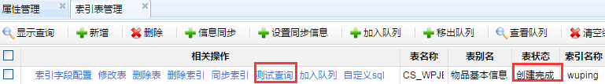

Important
配置完成后需要手动修改管理库连接地址及密码等

ESearch工程为elasticsearch插件的java客户端，通过本工程可完成以下操作。
将数据库表数据导入到elasticsearch中
基于已有的elasticsearch提供全文检索功能
管理现有的elasticsearch索引资源
Tip
布署本工程前，请先确保已经安装了 elasticsearch 插件。 elasticsearch安装请参考相关文档。本工程目前对应的elasticsearch版本为 version1.4.4 ，请安装对应版本的elasticsearch插件。
Important
本工程部分功能依赖于metadata及wmf，请确保线上已经布署了这两个工程。
最新版本的esearch2程序源码在svn库上 http://svn.dameng.com:2688/code/DM-GAHYB-CODE/product/dmga-esearch
从上面的 svn 地址下载源代码。
导入eclipse
编译并使用maven打成war包
联系开发人员获取该工程war包
在进行该工程布署前，需要在服务器上做好以下准备工作。
请自行百度或点此 参考
请自行百度或点此 参考
在文档目录下找到/etc目录
执行create_table.sql
执行init.sql
war包布署
如果是war包，则直接将war包拷贝到tomcat根目录的webapps下，然后启动tomcat，war包会自动解压。
非war包方式布署
非war包方式，需要在conf/server.xml中手动配置程序包所有位置。
配置示例.
<Context path="/esearch2" docBase="C:\zxbProgramFiles\workdir\project\code\DM-GAHYB-CODE\product\dmga-esearch\1.0.1\trunk\src\main\webapp" >
</Context>Important
配置完成后需要手动修改管理库连接地址及密码等
配置文件位置
索引抽取在这里指的是从数据库表中将数据抽取到全文库中（即插件处）。 程序实现了索引的全量抽取与增量抽取以及简单的清洗转换功能(数据最好ETL提前清洗好)。

Tip
名称 解释 节点名称
指定一个节点名称
节点ip
如
10.75.198.114:9300集群名称
必须如插件所配置的
cluster.name保持一致是否集群节点
建议默认选择
是状态
表示是否启用该节点
可以先点击右上角的 测试 按扭进行连接测试。
进入索引表管理界面，点击 新增 按钮

选择数据表所属数据源
进入数据集选择界面
选择要添加的数据集，点击 添加到索引管理表 即可。
Important
在添加索引表后， 需要配置索引字段信息后 ，方可进行索引的创建
在索引表管理界面，点击 索引字段配置

进入索引字段配置后，可进行字段的配置

在上面的配置项中，可编辑的配置项依次为。
列注释是确保在没有数据列注释的情况下，可以手动添加该列的注释信息。
属性设置指配置该列的属性信息。目前包括如下可配置的属性字段。
asc:升序排序
结果展示时将以该列进行升序排序
desc:降序排序
结果展示时将以该列进行降序排序
csrq:标识该字段为出生日期字段
备用属性
date:标识该列为日期列
标识该字段为日期列，配置该项后，可提供类似 张三 25 , 张三 1990 这种搜索。
gxsj:更新时间
指定该字段为更新时间， 同步索引 时将根据该字段进行索引更新。
rksj:入库时间
指定该字段为更新时间， 同步索引 时将根据该字段进行索引追加。
is_notAnalyzed:不分词处理
不分词处理，配置该项后，可支持 张？丰 , 张三* 这种搜索。 不建议多数字段配该项，会影响性能。对关键字段如XM可以配置该项。
is_store:存储索引
保留属性
key:关键列
云搜索中使用
not_query:非查询列
指定该列在数据检索时，不检索该列内容。
not_result:非结果列
指定该列在数据检索完成后，不获取该列内容。
not_show:不显示
指定该列在数据展示页面不显示。
pk:主键列
指定该列为主键
second_query:二次查询列
指定该列为二次查询列（ 一键搜索 中使用），配置该项后，在详细页面，点击该列可进行二次查询。
sfzh:身份证号列
强烈建议配置此项
一键搜索中照片展示会使用该项信息。
配置数据的日期格式
权重，指在数据检索过程中，该列权重值越高，如果该列有匹配内容，对应的那行数据将会显示越靠前。
强烈建议配置此项，可选值为1~10，值越高表示权重值越大，匹配后越靠前，默认值为1
该项只有在索引创建前配置方生效，如果索引已经创建后再配置此项将不生效。
当使用到了分词器时需要配置此项，如ik。未使用分词器时，配置此项将会报错。默认不配置。
当使用到了分词器时需要配置此项，如ik。未使用分词器时，配置此项将会报错。默认不配置。
建议默认 分词索引 ，当该列不需要建索引时选择 不索引
指定后可以 在创建索引过程中 对该列进行字典翻译。
指定后将控制在 一键搜索 中列的显示顺序。
创建索引指的是将数据库表数据抽取到全文资源库。
选择自定义sql

指定sql语句
指定用来创建索引的sql语句
指定同步索引时用来更新索引的sql语句
指定同步索引时用来追加新索引数据的sql语句
Tip
指定索引sql时，上面三者可指定其中一到多个
当指定或者没有指定创建索引sql语句后，点击创建索引即可开始索引的创建。
Tip
如果没有手动指定创建索引sql，则会以下面的sql默认创建索引。
select * from schema.table
当需要同时创建多个索引时，可以在多个索引表上点击创建索引。
Warning
注意，此时是并行创建，不推荐使用这种方式同时创建多索引。可查看
加入队列后创建索引。
当需要为多个索引表创建索引时，可将待创建的索引表 加入队列 ，然后在 查看队列 中点击 创建索引 完成索引的创建。队列中的索引表创建任务是串行的，即按顺序依次创建。
将待创建索引表加入队列

点击查看队列

队列任务中点击创建索引
Tip
队列中 正在被创建的索引任务 不可以移出队列，而后面 尚未开始创建 的索引任务可以被移出队列。
队列任务执行过程中，可随时添加新的索引任务。
当索引创建完成后，可以直接在这个管理界面，点击 测试查询 进行查询测试。
进入测试查询界面

点击测试查询
一键搜索是基于已经整合的索引表进行综合检索的功能。见下图：
Tip
完成上述功能需要完成以下几步
索引表对应的数据集进行资源编目
未编目的资源不会显示在一键搜索中
后台管理中配置查询方案
挂接索引表到查询方案对应的分类下
点击查询方案

此处的查询方案同 数据资源>查询方案 相同，只是挂了个链接。

手动添加 查询方案 ，进入查询方案后，手动添加 分类
依次点击 设置分类 ， 设置索引
将左侧的资源添加至右侧即可
Note
左侧的资源为索引表中的数据，且必须为已经 _编目_过的。
资源名称分为三种颜色。
红色 红色表示该资源未创建索引。
紫色 紫色表示该资源被其它分类已经挂接过。
绿色 绿色表示该资源已创建索引且未被其它分类挂接过。
上述步骤完成后，整个一键搜索即配置完成。
Important
为提高检索速度，分类信息均缓存。配置成功后，请点击 清除缓存
上述工作完成后，可按以下地址进入一键搜索界面。 http://host:port/esearch2/elasticsearch/DefaultQuery_init.do?scheme_id=scheme_id
你布署esearhc2的机器ip
你的tomcat的端口号
你刚才配的查询方案的ID（点击查询方案详细可看到）
http://localhost:8080/esearch2/elasticsearch/DefaultQuery_init.do?scheme_id=ejc
主关键字框中输入关键字，点击搜索直接开始搜索。
左侧资源展示顺序，可在后台管理中进行配置。

点击修改表
修改排序号并保存
人物照片展示会在如下两个位置进行展示。


如上所示，图片均挂了，图片展示功能不属于一键搜索的范围。需要其它系统提供一个获取照片的接口。例如：
http://localhost:8080/esearch2/elasticsearch/GetImg_getImg.do?sfzh=422130194202175629Tip
需要添加照片展示功能，需要具备如下条件。
具备一个照片获取接口，可根据身份证号获取的。
该索引表已经指定了身份证号列。
二次查询，在此处是指通过在详细页面点击某列信息，然后基于该列值再次进行检索。
点击详细页面中的二次查询列后，将以该列值进行二次检索。

点击检索后的结果行，将跳转到对应资源页面

配置二次查询列

配置可被二次查询检索的资源
点击查询方案，添加方案，如 关联查询分类

点击详细，此处scheme_id需要修改为[big red]renyuan
依次点击设置分类，设置索引。同上面挂接资源一样即可。

筛选查询指的是在已经查询后的结果集中进行筛选，支持多个条件同时筛选。

搜索按钮右侧可以点击提示按钮获取搜索语法。
点击搜索提示按钮
查看搜索提示

在孝感部门共享中，还添加了其它定制化开发的一些功能。
户成员即展示该用户的户藉变动信息。点击后会跳到对应页面根据身份证号进行查询。
Tip
不需要此功能时，可修改页面使不显示。
比对，指将同一资源下的多条数据放在一起进行比对显示。 不需要此功能时，可修改页面使不显示。
程序实现了定时执行索引同步任务。需要在如下配置文件中配置。
下图则是已经配置好了同步。

<property name="cronExpression" value = "0 28 10 * * ?"></property>
<!-- 引用trigger -->
<bean class="org.springframework.scheduling.quartz.SchedulerFactoryBean">
<property name="triggers">
<list>
<ref local="sychronizedTrigger" />
</list>
</property>
</bean>此处配置定时调度频率，为cron表达式。请自行百度如何编写cron表达式。
当不需要此定时任务执行时，请将此bean给注释掉即可。